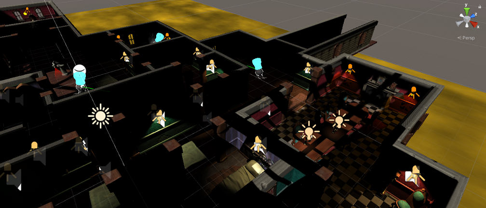

Haunted Jaunt 3D Game Modifications
XR Terra AR & VR Developer Program
>In the XR Terra AR & VR Developer Certificate Program, our first group project was to modify a 3D game shell, John Lemon's Haunted Jaunt, adding lots of functionality to make it exciting and fun.

(Description of functionality needed.)
Achievements
- Modified a 3D game shell, John Lemon's Haunted Jaunt: 3D Beginner.
- Team Lead. Led meetings, mostly daily, sometimes more than one a day.
- Saved the start position and sent the Player back to it, when contacting a ghost, contacting a gargole, or spotted by a ghost, and after successfully completing the game and the user wishes to play again.
- Used raycasting to detect a patrolling ghost spotting the Player
- Create waypoints so patrolling ghosts moving on nav mesh
- Modified the environment by adding lights and doors to increase the number of paths the player may traverse to complete the game successfully.
- Inserted royalty-free images into picture frames.
- Indicated to the user when the character could use a keyboard key to activate something in the game - a SPACEBAR to force a piece of furniture out the way; and an "E" key press to open closed door Detect collisions for the furniture and doors to let the user know they were close enough to act upon them.
- Addded glowing baker's hats to make ghosts more apparent
- Added a Mini-Map so user can see top-down orthogonal view of player's location
- Added background sound effects for when the player is caught by ghost, finishes, etc. Implemented a "Red Alert" Game Mode to indicate when the player is "spotted" by a ghost (raycasting by ghosts). The lighting changes to red, a background siren sound goes off, and the ghosts begin to chase the player.
- Used an event manager to dispatch and listen for events to simplify code.